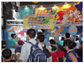

Date: 2005.06.25～26

第20回会場の様子
6月25～26日に東京の幕張メッセにて開催される
「第22回 次世代ワールドホビーフェア」で、ソニックシリーズ新タイトル
『シャドウ・ザ・ヘッジホッグ』
『ソニック ジェムズコレクション』
『ソニック ラッシュ』の
3タイトルが遊べます！
どのゲームも、日本では初お披露目のタイトルです。
プレイしてくれた方全員に「ソニック/シャドウうちわ」をプレゼント！
「ソニックグッズ プレゼントページ」をプリントアウトした物を持ってきて、
ソニックコーナーで遊んでくれた方には
「ソニックチャンネル」オリジナル缶バッチもプレゼント！
※キャンペーンは終了いたしました
※「第22回 次世代ワールドホビーフェア」および「ソニックグッズ プレゼントキャンペーン」は大好評のうちに終了いたしました
「第22回 次世代ワールドホビーフェア」イベントレポートはコチラ！
「次世代ワールドホビーフェア」公式サイトはコチラ！